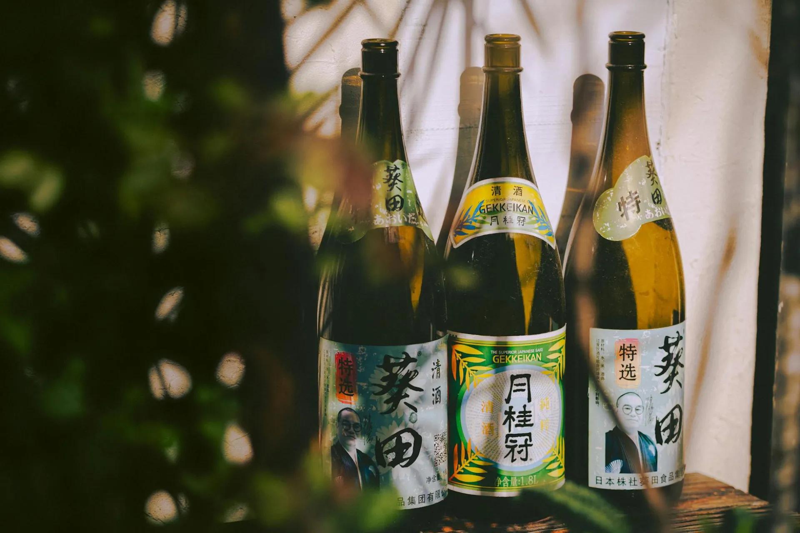

Four Centuries of Living Craft
KOJI Fermentation Studio was founded not to reinvent tradition, but to carry it forward with reverence. We cultivate ancient koji strains in cedar-lined chambers, guided by the same rhythms that Edo-period brewers knew by heart.

A Lineage of Fermentation
The koji tradition stretches back to Japan's Nara period, codified into the rituals we practice today. Our studio stands at the intersection of that ancient lineage and a contemporary hunger for authentic, living food.
Edo Period Origins
The Hayashi family establishes a fermentation workshop in Nishiki, Kyoto. Rice from the surrounding Kansai plains and water drawn from the Kamo River form the basis of their first shio koji and mirin productions.
The Muro is Built
The fourth-generation patriarch constructs the cedar-lined muro still used today, insulated with hand-packed clay and rice husks, capable of maintaining the precise temperature and humidity required for 48-hour koji cultivation.
Hayashi Kenji is Born
Born into the studio, Kenji spends his childhood in the muro, developing an intuitive sensitivity to the smell, texture, and warmth of cultivating koji that no textbook can teach.
Training Pilgrimage
Kenji trains under three fifth-generation koji masters in Niigata, Akita, and Kyoto, learning distinct regional approaches — from the sweeter amylase-forward styles of Niigata to the intensely savory, protease-rich koji of Akita.
KOJI Studio Founded
Kenji formalizes the family operation as KOJI Fermentation Studio, expanding from domestic sales to wholesale partnerships with leading restaurants across Tokyo, Copenhagen, Hong Kong, and New York.
Global Recognition
Featured in The World's 50 Best Restaurants supplier directory. Partnership established with Nordic Food Lab, contributing to the first peer-reviewed study of Aspergillus oryzae strain diversity in traditional Japanese koji houses.
Living Archive
The studio now maintains 15 distinct koji strains, including three considered nearly extinct. Our muro operates continuously, producing small-batch ferments for chefs, private collectors, and those who believe food should be alive.

Hayashi Kenji in the cedar muro, Nishiki, Kyoto
Hayashi Kenji
Kenji does not consider himself a craftsman in the conventional sense. He is, in his own words, a listener — someone trained to hear what the koji asks for. His hands move through cultivating rice not to impose pattern, but to encourage the mold's natural intelligence.
"When the rice is ready, you can smell it before you touch it. A sweetness like roasted chestnuts, the warmth of something breathing. That moment never becomes ordinary." — Hayashi Kenji
Over two decades of study have taken Kenji from the remote sake breweries of Niigata to the fermentation laboratories of Copenhagen. He returns always to the same cedar chamber, the same pre-dawn hours, the same ancient mold that has defined his family for four centuries.
How Koji Works
Aspergillus oryzae — koji mold — is a single-celled fungus whose enzymatic output rivals the most sophisticated food science laboratories. Its three primary enzyme families transform humble grains into extraordinary flavor.
Amylases
Alpha- and glucoamylase enzymes break down starch molecules into simple sugars — glucose, maltose, and dextrins. This is what makes amazake naturally sweet without any added sugar, and what gives sake its fermentable foundation.
Proteases
Protease enzymes cleave protein chains into free amino acids, particularly glutamate — the molecule of umami. This biochemical transformation is responsible for the profound savory depth of aged miso and the flavor-enhancing quality of shio koji marinades.
Lipases
Lipase enzymes break down fats into free fatty acids, generating complex aroma compounds that give long-fermented koji products their characteristic fragrance — a spectrum that ranges from floral to nutty to deeply earthy.
Principles of the Studio
Living Culture First
We never pasteurize our living koji products. Enzyme activity is the product. We ship cold and ask our partners to handle with the same care as living vegetables.
No Shortcuts
Mugi miso aged eighteen months cannot be approximated with a six-month product. We refuse to compress fermentation timelines regardless of demand. Good things require real time.
Heirloom Grain Only
Every grain we use is sourced from a named farm and a specific variety — Koshihikari rice from Yamagata, Shirotsuru barley from Tottori. Traceability is not marketing; it is quality control.
Strain Preservation
Three of our fifteen koji strains are considered critically endangered in Japan. We maintain living cultures and have donated propagated colonies to two national agricultural preservation programs.